01 de Junho de 1980
Campeão Brasileiro 1980
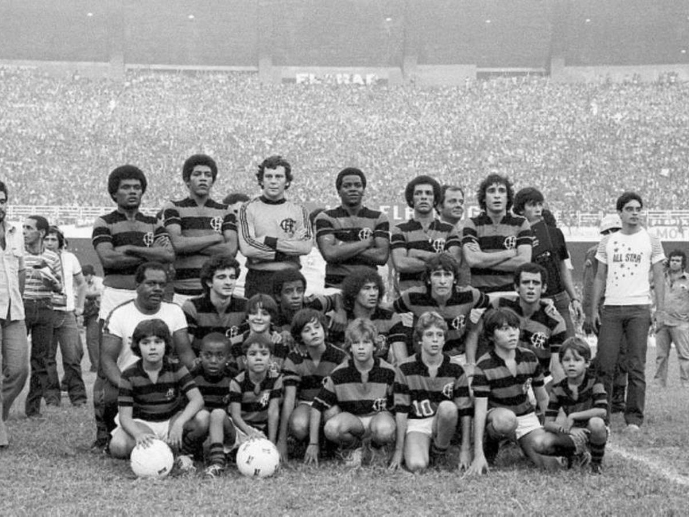
Atletico MG 1 x 0 Flamengo / Flamengo 3 x 2 Atletico MG
Raul; Toninho (Carlos Alberto), Rondinelli, Marinho, Júnior; Andrade,
Carpeggiani (Adílio), Zico, Tita; Nunes e Júlio César. Técnico:
Cláudio Coutinho. Cantareli, Leandro, Manguito, Nelson, Vitor,
Reinaldo, Carlos Henrique, Anselmo.
23 de Novembro de 1981
Campeão da Libertadores 1981
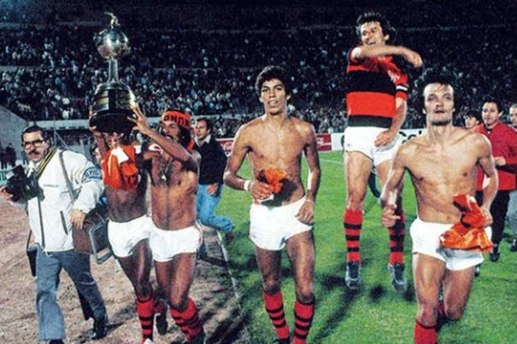
Flamengo 2 x 1 Cobreloa / Cobreloa 1 x 0 Flamengo / Flamengo 2 x 0
Cobreloa
Raul; Leandro, Marinho (Figueiredo), Mozer e Júnior; Andrade, Adílio,
Zico, Tita; Nunes e Baroninho (Lico). técnico: Paulo César
Carpeggiani. Cantareli, Carlos Alberto, Rondinelli, Nei Dias, Vitor,
Chiquinho, Ronaldo, Fumanchu, Peu, Anselmo.
13 de Dezembro de 1981
Campeão Mundial 1981
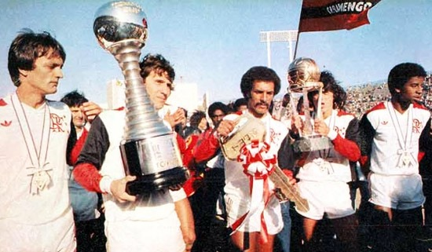
Flamengo 3 x 0 Liverpool
Raul; Leandro, Marinho, Mozer, Júnior; Adílio, Andrade, Zico, Tita;
Nunes e Lico. técnico: Paulo César Carpeggiani. Cantareli, Figueiredo,
Nei Dias, Peu, Anselmo, Baroninho.
25 de Abril de 1982
Campeão Brasileiro 1982
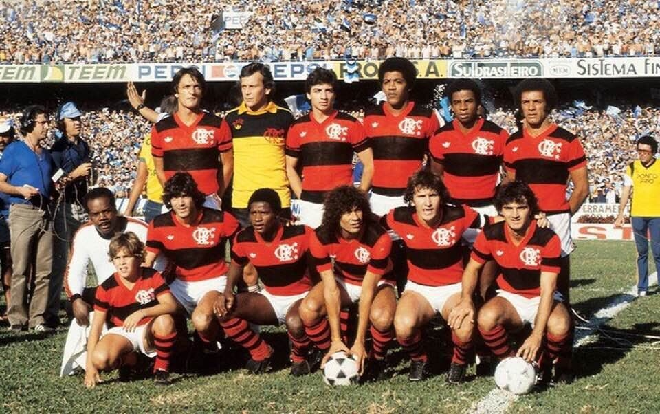
Flamengo 1 x 1 Grêmio / Grêmio 0 x 0 Flamengo / Flamengo 1 x 0 Grêmio
Raul; Leandro, Marinho, Mozer, Júnior; Andrade, Adílio, Zico, Tita;
Nunes e Lico. técnico: Paulo César Carpeggiani. Cantareli, Figueiredo,
Vitor, Reinaldo, Edson, Popéia, Chiquinho, Peu, Anselmo.
22 de Maio de 1983
Campeão Brasileiro 1983
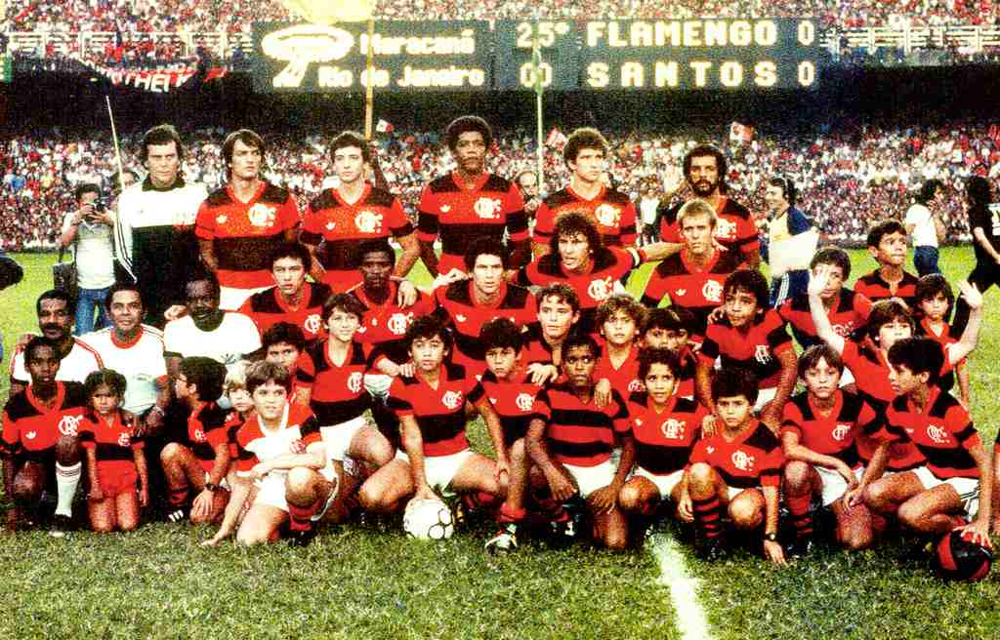
Santos 2 x 4 Flamengo / Flamengo 3 x 0 Santos
Raul; Leandro, Figueiredo (Marinho), Mozer, Júnior; Andrade (Vitor),
Adílio, Zico, Robertinho (Elder), Baltazar e Lico (Júlio César).
técnico: Carlos Alberto Torres. Cantareli, Adalberto, Cocada, Ademar,
Ronaldo, Bigu, Felipe, Edson, Bebeto.
13 de Dezembro de 1987
Campeão Brasileiro 1987
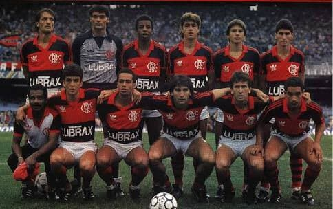
Internacional 1 x 1 Flamengo /Flamengo 1 x 0 Internatcional
Zé Carlos; Jorginho, Edinho, Leandro, Leonardo; Ailton, Andrade,
Zinho, Zico; Bebeto e Renato Gaúcho. técnico: Carlinhos. Cantareli,
Júlio Cesar, Zé Carlos II, Guto, Aldair, Flavio, Airton, Kita, Gerson,
Vandick, Alcindo, Henágio, Leandro Silva, Nunes.
7 de novembro de 1990
Campeão Copa do Brasil 1990
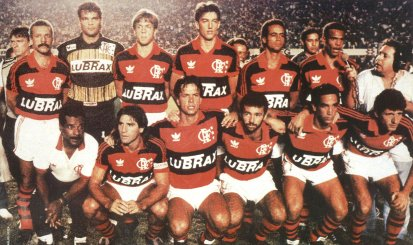
Flamengo 1 x 0 Goiás / Goiás 0 x 0 Flamengo
Zé Carlos; Zanata, Vitor Hugo, Fernando (Rogério), Leonardo (Piá);
Ailton, Uidemar, Djalminha (Júnior); Renato Gaúcho, Gaúcho e Zinho.
técnico: Jair Pereira. Neneca, Josimar, André Cruz, Marcelinho
Carioca, Marquinhos, Nélio, Bujica, Alcindo, Bobô.
12 de Julho de 1992
Campeão Brasileiro 1992
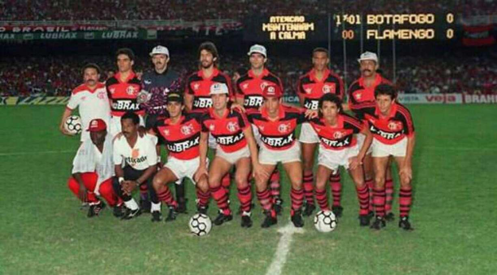
Flamengo 3 x 0 Botafogo / Botafogo 2 x 2 Flamengo
Zé Carlos; Zanata, Vitor Hugo, Fernando (Rogério), Leonardo (Piá);
Ailton, Uidemar, Djalminha (Júnior); Renato Gaúcho, Gaúcho e Zinho.
técnico: Jair Pereira. Neneca, Josimar, André Cruz, Marcelinho
Carioca, Marquinhos, Nélio, Bujica, Alcindo, Bobô.
19 de Julho de 2006
Campeão Copa do Brasil 2006
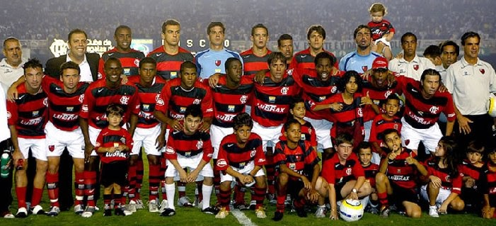
Flamengo 2 x 0 Vasco / Vasco 0 x 1 Flamengo
Diego; Leonardo Moura, Renato Silva, Fernando (Ronaldo Angelim),Juan;
Léo (Renato Augusto), Júnior (Toró), Jônatas, Renato; Ramírez (Obina)
e Luizão. técnico: Ney Franco. Getúlio Vargas, Marcelinho, Rodrigo
Arroz, André, Diego Souza, Fellype Gabriel, Peralta, Vinícius Pacheco.
6 de novembro de 2009
Campeão Brasileiro 2009
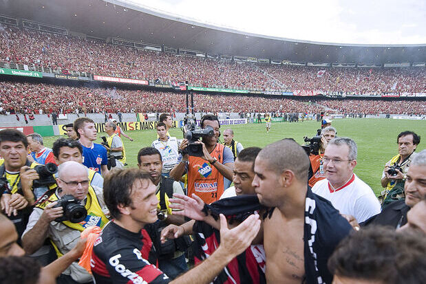
Flamengo Campeão com 67 Pontos em 38 Rodadas.
Bruno; Léo Moura, Álvaro, Ronaldo Angelim, Juan (Éverton); Maldonado (Toró), Airton, Willians, Petković; Zé Roberto (Emerson) e Adriano. técnico: Andrade.
Diego, Everton Silva, Welinton, David, Lenon, Kléberson, Fierro, Dênis Marques, Bruno Mezenga.
27 de novembro de 2013
Campeão Copa do Brasil 2013
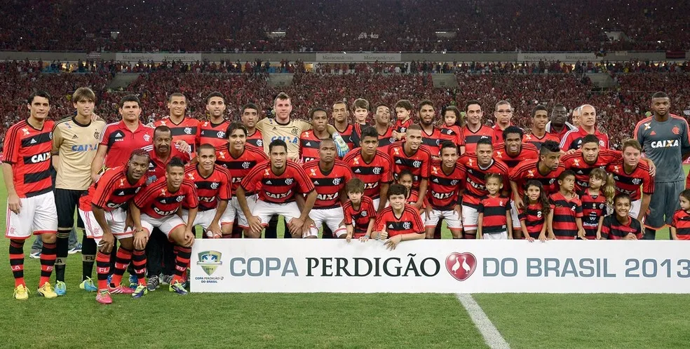
Atletico PR 1 x 1 Flamengo / Flamengo 2 x 0 Atletico PR
Felipe, Léo Moura, Chicão, González, Cáceres, Rafinha, Elias, Hernane, Gabriel, Renato Abreu, Renato Santos, Wallace, Luiz Antônio, João Paulo, Adryan, Rodolfo, Marcelo Moreno, Carlos Eduardo, Mattheus, Luan Polli, Paulinho, André Santos, Bruninho, Nixon, Val, Ramon, Fernandinho, Samir, Digão, Diego Silva, Frauches, César, Welinton, Amaral, João Paulo, Paulo Victor, Cléber Santana.Técnico: Jayme de Almeida.
23 de Novembro de 2019
Campeão da Libertadores 2019
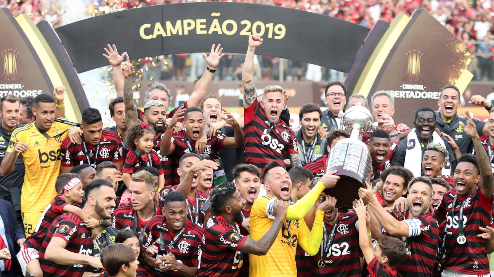
Flamengo 2 x 1 River Plate
Diego Alves, Rafinha, Rodrigo Caio, Pablo Marí, Filipe Luís, Willian Arão, Gerson, Giorgian De Arrascaeta, Éverton Ribeiro, Bruno Henrique, Gabriel. Técnico: Jorge Jesus. César, Rodinei, Rhodolfo, Matheus Thuler, Renê, Diego, Vinicius Souza, Reinier, Piris da Motta, Vitinho, Lincoln, Orlando Berrío.